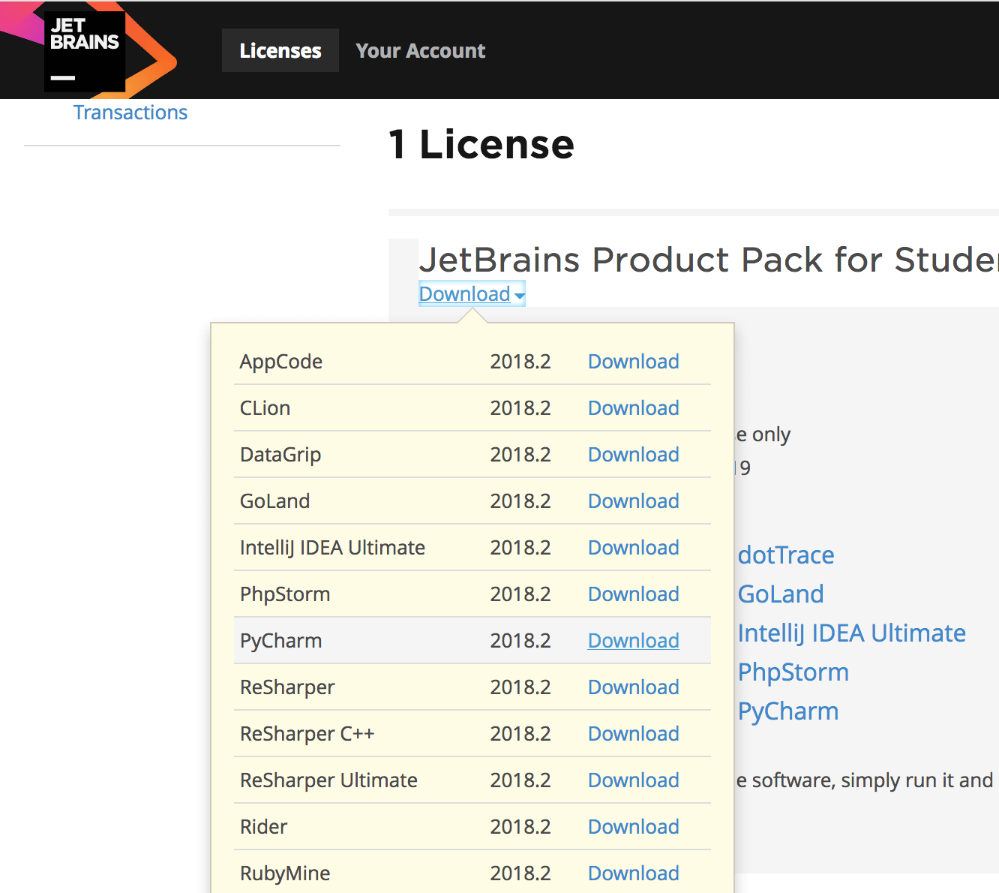
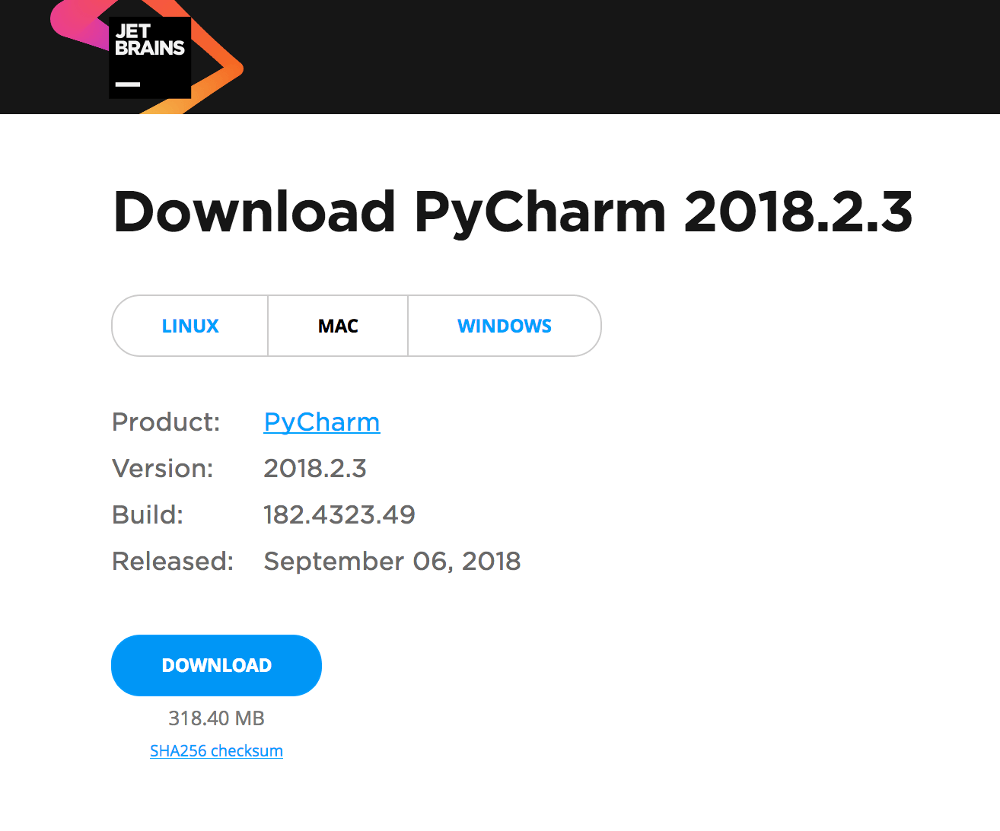
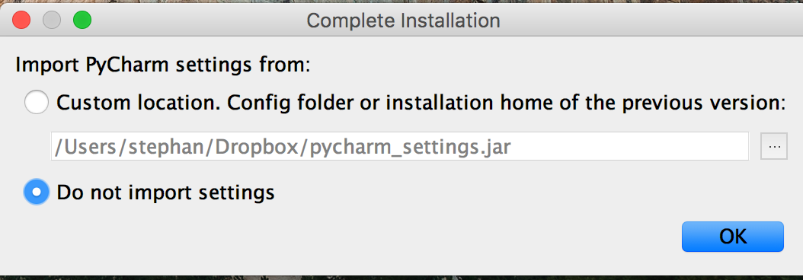
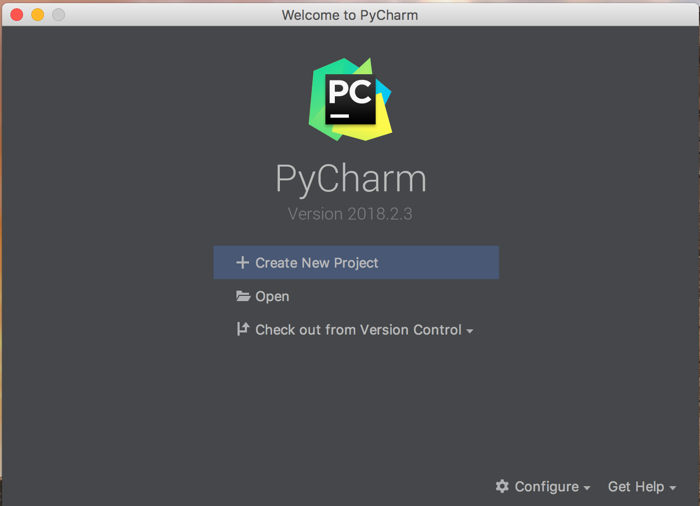
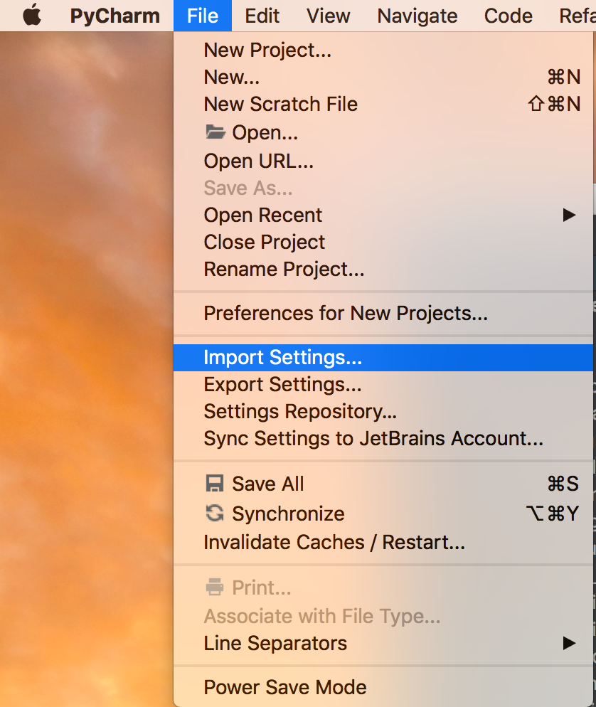
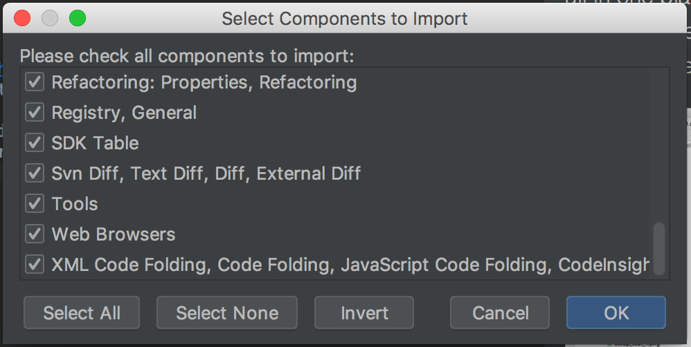
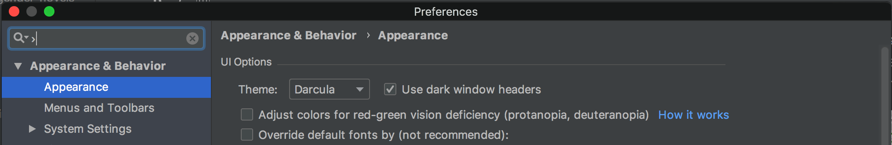
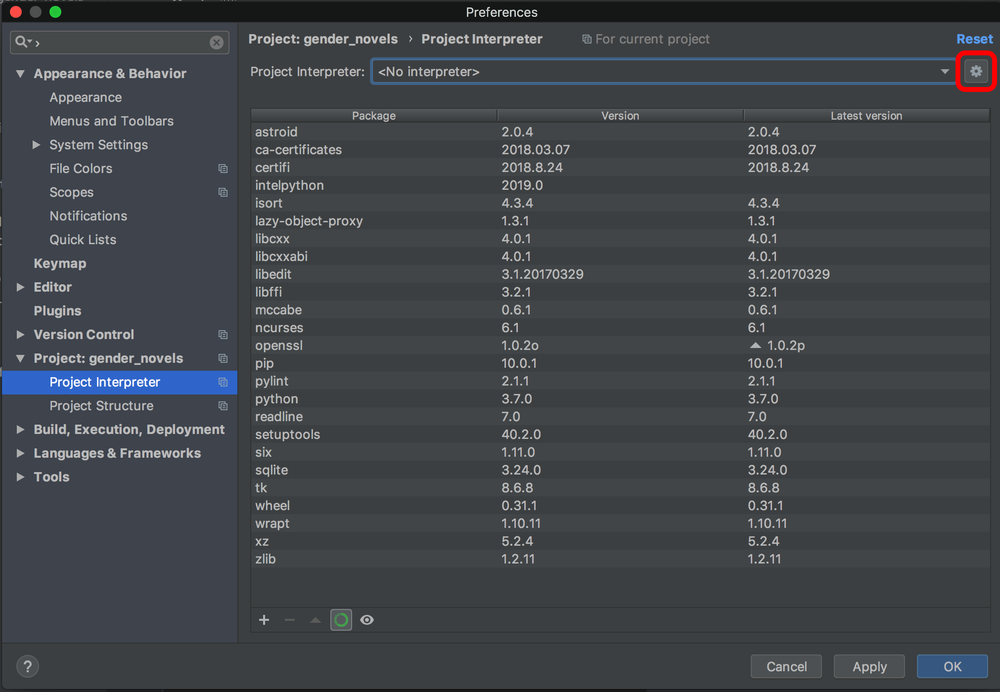

Agree to the pop-up.
Agree to the pop-up.
Setting up a development environment on a computer unfortunately remains a complicated task, even in 2018. After the first group meetings on Friday, September 14, we went back to our instructions and tried to overhaul them to make them easier. You're right now looking at the result of that effort.
This guide includes a complete installation of Python, git, and PyCharm on your computer. Many of you have already complete some of these steps. Hence, if you are certain or almost certain that you have already completed one of the listed steps, you can move to the next one.
Here's a brief list of the changes, compared to the guides from Friday:
We hope this will make it easier for your to setup your Python enviroment.
Note: You can skip this step if: 1) You already have Python 3.6 or Python 3.7 installed and 2) you know where you have it installed. In all other cases, it will be easier to install Python 3.7 even if it is a re-install.
Go to the python.org website and download the Python 3.7 installer.
Once you have downloaded the installer, double-click it to start the installation.
Note: All of the following screenshots are from the Mac installation. Windows may present you with different menus and we'll add screenshots for that install soon. In the meantime, just select the option that seems like the default--it shouldn't be too hard.
Agree to the pop-up.
We suggest that you install Python in the default location. If you select another location, please
note that location down--we will probably need it for bug-fixing later.
Once you're done with the installation (at least on Macs), you will be left with this directory.
This means that everything installed correctly and you're ready for the next step.

We will use Git to work together on our shared codebase. Git is version-control open-source software that allows us to work on code individually while we test, document, and prepare new functions and features. Once we are ready to share the new additions to the larger project, we can open a pull request to receive feedback and modify our code until it is accepted and incorporated into the larger project's codebase.
GitHub is a popular code repository web-based hosting service web-based hosting service that uses Git to help developers collaborate on code. It offers a desktop program to help make Git more intuitive.
This guide will set you up with Git and GitHub on a Windows or Mac machine.
Next, you should create a GitHub accountif you don't already have one.
It is worth noting that you can get added benefits through GitHub and other technology organizations — including unlimited private code repos — by signing up for the Student Developer Pack.
Forking a repository allows us to work on the project individually without interfering with someone else's work. Each individual team member should create their own fork of the main project.
To do this, choose the relevant repository of MIT DH.
From the repository you're working with, you can create your own fork of the main project. To do
this, you have to log in to your Github account and go to the main project page. For example, for
the gender_novels project, the main project page is
https://github.com/dhmit/gender_novels. From this page,
you should look for the Fork button on the right side near the top.

Once the main repository is forked, you should be on a page that looks almost like the original repository except that it doesn't belong to the dhmit account but rather to your own account (in this case: dhlab-test).

With your repository forked, you can move on to installing the GitHub desktop application.
Github Desktop provides you with a graphical user interface (GUI) to work with git and GitHub. This provides you with a visual review of your changes before you push code.
You can download Github Desktop from https://desktop.github.com/. Install the appropriate version for your machine and follow the installation steps.
Once you have installed and opened Github Desktop, you will be greeted by a loading screen. To download a local copy of the repository that you just forked, click on Clone a Repository.
If you aren't already logged in to your GitHub account, you should sign in now.
Signing in will connect GitHub Desktop to your GitHub account.
If you logged in at this point, you may be dropped back on the loading screen — click on Clone a Repository again.
You should now see the forked repository pop up under Your Repositories. Once you click on it, you can select the local path where you want all the project files to be stored.
You may have a path similar to the following:
/Users/your-name/GitHub/repo-name
Note the path, as you will need to know it later.
Once the path is set, press Clone.
If you go to the specified path, you should now see all of the project files there.

Finally, install the git command line interface. This allows you to execute git commands from the command line if necessary. Note: The menu may look slightly different in Windows. You should see a confirmation that the installation has succeeded.
With this step, you should have your git and Github environment configured.
In the Digital Humanities Lab, we'll be using the PyCharm IDE from JetBrains.
An IDE or Integrated Development Environment gives you the ability to write, run, test, and lint code all in one place. The PyCharm interface looks like this:

By standardizing the IDE across the lab, we hope to facilitate collaboration and standardize support.
As students with a .edu email address, you can get PyCharm for free
by signing up for an educational account.
Once you have signed up for an account, you will receive an email activation to confirm your email. When you click on the link you will be able to download PyCharm among other JetBrains offerings.

Alternately you can download PyCharm through this direct link — be sure to get the Professional Edition.

The installation process differs slightly between Mac and Windows but you can select the default settings in both cases.
Once the installation process is finished, open up the PyCharm application. This will open up an activation screen. You can activate PyCharm by entering the email and password that you used before to sign up for a Jetbrains account.

Next, you will get to a setup menu.
Note: If you already have PyCharm installed or you accidentally skipped this setup, don't worry. You can change the settings later--they are not very important.
In the first window, select "Do not import settings". We'll import settings at a later stage. 
(Mac only) Select the Mac OS X 10.5+ keymap

Select either the dark ("Darcula") or Light theme. (Note: you might have
to set it again later after you import )

Don't create a launcher script--leave the checkbox empty.

Click on the buttons to install Markdown and BashSupport.

Once the setup is finished, you will be greeted by the screen below. Select "Open" to select the existing gender_novels repo. 
Select the path to your gender_novels repo (in my case: ~/code/gender_novels)

This will bring up the main PyCharm window with the loaded gender_novels directory
on the left.

Next, we're going to import the DH Lab PyCharm settings. First download the settings file. Then, go to file, "Import Settings..." 
Import all components. 
As a final step, we'll change some configuration settings.
On Mac, select PyCharm -> Preferences, On Windows File -> Settings

Under "Appearance & Behavior" -> Appearance, you can select either the dark "Darcula" theme or the "Light" theme. 
Then, you need to configure your Python interpreter under "Project: gender_novels" -> Project Interpreter. Click on the wheel in the top right and select "Add". 
Select "New environment." Under "Base Interpreter" look for one that ends with Python 3.7 and click OK.
Note 1: If you cannot find a Python 3.6 or 3.7 interpreter in the "Base Interpreter" list, something probably went wrong with the Python installation. Try restarting your computer. If that doesn't fix the problem, come see us--we'll probably need to track down the path to your Python installation.
Note2: If you get a warning saying that "Environment location is not empty" you most
likely have already created a virtual environment for this project. You can either try
to skip this step or initialize a new environment by replacing (in "Location") venv
with gender_env
Back in the main menu, click "Apply" to activate the updated settings.

Now, we only need to locally install the gender_novels package and its dependencies to finish the installation.
First, open setup.py by double-clicking on it.
Next, go to "Tools" -> "Run setup.py Task..." Note: If you cannot see "Run setup.py Task" in the menu, you might have the wrong or no file open. In particular, you might have a file from the venv folder (in orange) open. Try opening setup.py or common.py or other python files in the directory until you see the option "Run setup.py Task".
Either double-click on "develop" or type "develop" into the task name window and hit Enter.
Leave the following window empty and just click "OK."

Finally, we will run a test to see if the installation succeeded. To do this, go to "Tools" -> "Run setup.py Task" again.
This time around, select "test".
Leave the following window empty and just click "OK."
When the command has finished, you should see a prompt similar to the one below, which says:
Ran <x> tests in <y>s
OK
If you see this, you're all set to start working on this DH Lab project!